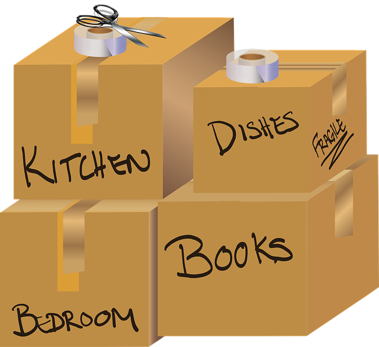
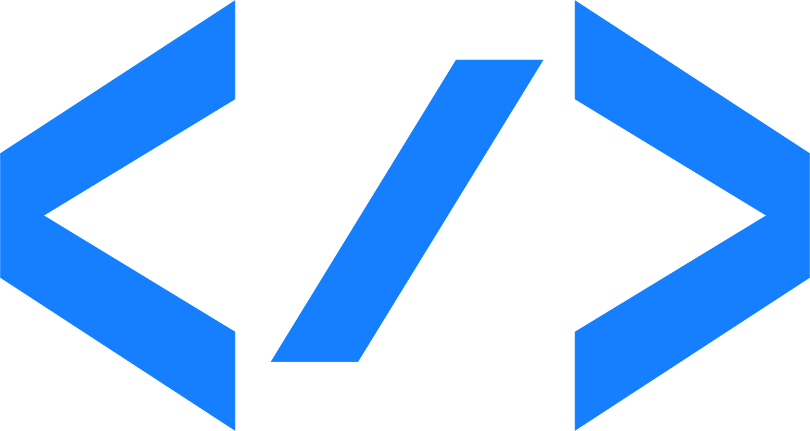
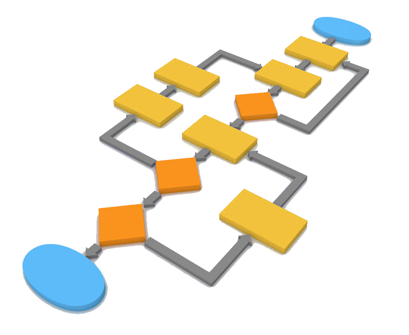

1. Variáveis
O que são variáveis? Variáveis são lugares na memória do computador que guardam valores. Pense nelas como caixinhas que guardam tipos de coisas diferentes. Proposito das variáveis? Guardar informações: permitem que você salve informações e as use futuramente no seu programa. Mutáveis (ou não): O valor delas pode ou não mudar, depende do seu programa. Exemplo em C: int idade = 9;
const int outra_idade = 10; Explicação do exemplo: Na primeira linha, define-se uma variável chamada 'idade', que guarda um valor inteiro (int) E no segundo exemplo, cria-se uma 'variável constante', chamada outra_idade, que também guarda um valor inteiro Diferenças: O valor de 'idade', pode mudar durante a execução do programa A constante 'outra_idade' serve para dar um nome ao valor, para saber o que ele representa |
 |
2. Tipos de dados
O que são tipos de dados? Tipos de dados controlam e que tipo de informações são armazenadas em uma variavel, seu tamanho e quais operações podem ser realizadas sobre ela. Tipos de dados comuns do C
|
3. Operadores
Operadores são simbolos que fazem o computador executar uma operação. Eles podem ser divididos em 3 categorias: Matemáticos
|
 |
4. Estruturas de controle
Mudam a execução do programa dependendo das condições atuais IF O IF é a estrutura de controle mais comum, ela executa código somente se a condição utilizada for verdadeira Exemplo estrutura de controle IF: bool verdadeiro = true;
if(verdadeiro) { printf("VERDADEIRO!"); } Explicação do exemplo: A mensagem 'VERDADEIRO!' só vai aparecer na tela, caso 'verdadeiro' seja verdade (true) |
 |